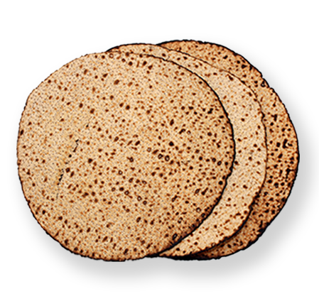
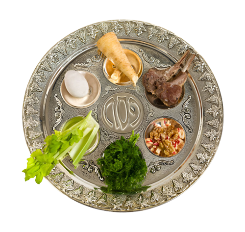

With Handmade Matzah (no dough required)
This Passover, Jew it up with a free box of 3 premium
handmade matzahs – compliments of Chabad-Lubavitch.
This matzah isn’t just any cracker. It reconnects us to our
ancestors' hurried escape from Egypt – carrying with it the
spiritual energy of faith, freedom, hope and redemption.
So be sure to eat THIS matzah at the Seder!
(Just try to keep the crumbs under control.)
Contact your local Chabad-Lubavitch Center

With a well rounded Seder
This Passover, let’s Jew it up at your local
Chabad-Lubavitch Community Seder! We’ll
read the Hagadah, eat hand-made matzah,
enjoy a delicious meal – and celebrate our
freedom with greater joy than ever before.
Find a Seder Closest to you